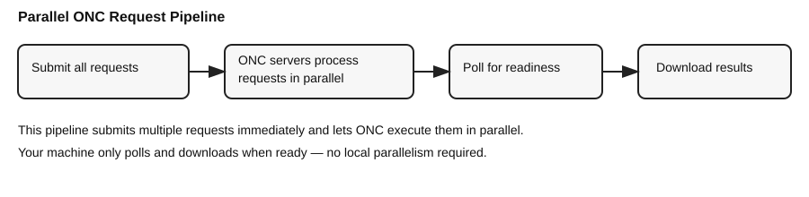

Advanced and Batch Download Workflows¶
This page covers server-generated spectrograms, sampling, event batches, and JSON/CSV request files. The complete Download Audio and Make a Spectrogram example covers the common local-generation workflow. For ordinary audio ranges, see Download Audio.
For the differences between ONC's one-minute, plot-resolution, and full-resolution MAT products—plus concatenation, source, channel, diversion, PNG/PDF, and server-generation options—see ONC Spectrogram Products and Server Options.
Note
The downloader submits multiple ONC requests in parallel and then downloads results as they become ready. ONC handles the parallel processing on its servers, so you don’t need to parallelize locally.

Shared setup for the examples¶
Run this block once before the Python examples below:
from datetime import datetime, timezone
from onc_hydrophone_data.data import HydrophoneDownloader
from onc_hydrophone_data.onc.common import load_config
onc_token, data_dir = load_config()
dl = HydrophoneDownloader(onc_token, data_dir)
DEVICE = "ICLISTENHF6324"
start = datetime(2024, 4, 1, 12, 0, tzinfo=timezone.utc)
end = datetime(2024, 4, 1, 14, 0, tzinfo=timezone.utc)
Server-generated spectrograms for a range¶
result = dl.download_spectrograms_for_range(
device_code=DEVICE,
start_dt=start,
end_dt=end,
spectrograms_per_batch=6,
)
Include matching audio¶
result = dl.download_spectrograms_for_range(
device_code=DEVICE,
start_dt=start,
end_dt=end,
spectrograms_per_batch=6,
download_audio=True,
)
Sample uniformly across a range¶
sample_start = datetime(2024, 4, 1, tzinfo=timezone.utc)
sample_end = datetime(2024, 4, 8, tzinfo=timezone.utc)
result = dl.download_sampled_spectrograms(
device_code=DEVICE,
start_dt=sample_start,
end_dt=sample_end,
total_spectrograms=24,
spectrograms_per_request=6,
)
Download around event timestamps¶
events = [
datetime(2024, 4, 1, 12, 5, tzinfo=timezone.utc),
datetime(2024, 4, 1, 13, 25, tzinfo=timezone.utc),
]
result = dl.download_spectrograms_for_events(
device_code=DEVICE,
event_times=events,
spectrograms_per_request=6,
)
Audio-only range¶
The focused Download Audio guide explains output paths, resuming, formats, and long-range sampling. The minimal call is:
result = dl.download_audio_for_range(
device_code=DEVICE,
start_dt=start,
end_dt=end,
)
JSON/CSV requests for ONC products¶
This workflow downloads audio and/or spectrogram products from ONC. With its
default download_spectrogram: true, the spectrogram is computed by ONC; the
local SpectrogramGenerator and its edge-context settings are not used.
To use JSON timestamps to download source audio and compute your own
spectrograms with custom FFT settings and automatic clip-boundary context, use
create_custom_spectrograms_from_json()
instead.
results = dl.download_requests_from_json("/path/to/requests.json")
results = dl.download_requests_from_csv("/path/to/requests.csv")
JSON request format¶
JSON uses a {defaults, requests} payload. Each request must include
deviceCode and either timestamp or a start/end window.
{
"defaults": {
"pad_seconds": 15,
"download_audio": true,
"clip": true,
"data_product_options": {
"dpo_spectralDataDownsample": 2
}
},
"requests": [
{
"deviceCode": "ICLISTENHF6324",
"timestamp": "2024-04-01T12:34:50Z",
"label": "whale call 1"
},
{
"deviceCode": "ICLISTENHF6324",
"start": "2024-04-01T12:30:00Z",
"end": "2024-04-01T12:33:30Z",
"pad_before_seconds": 10,
"pad_after_seconds": 20,
"label": "ship noise event"
}
]
}
CSV request format¶
CSV is a flat table (one request per row) with the same fields as JSON.
Use a deviceCode column to support multiple devices in one file.
deviceCode,timestamp,label,data_product_options
ICLISTENHF6324,2024-04-01T12:30:00Z,whale call,"{""dpo_spectralDataDownsample"": 2}"
ICLISTENHF6324,2024-04-01T14:45:30Z,ship noise,"{""dpo_spectralDataDownsample"": 1}"
ICLISTENHF6324,2024-04-02T08:15:00Z,unknown,""
Supported fields (JSON + CSV)¶
| Field | Type | Required | Notes |
|---|---|---|---|
deviceCode |
string | yes | Hydrophone device code (e.g., ICLISTENHF6324) |
timestamp |
string | if no start/end |
ISO 8601 (UTC or offset) |
timezone |
string | no | Timezone for naive timestamps (e.g., America/Vancouver, UTC, -07:00) |
start |
string | if no timestamp |
ISO 8601 start time |
end |
string | no | ISO 8601 end time |
duration_seconds |
number | no | Used when start is set but end is omitted |
pad_seconds |
number | no | Symmetric padding around timestamp or start |
pad_before_seconds |
number | no | Override padding before |
pad_after_seconds |
number | no | Override padding after |
download_audio |
bool | no | Download audio files (default: false) |
download_spectrogram |
bool | no | Download ONC spectrograms (default: true) |
spectrogram_format |
string | no | mat or png |
clip |
bool | no | Clip outputs to the padded window |
audio_extension |
string | no | flac or wav |
output_tag |
string | no | Output folder tag |
output_name |
string | no | Override clip basename |
label / description |
string | no | Metadata label |
data_product_options |
object | no | ONC dpo_* options (same as HSD_OPTIONS) |
Notes¶
- Multiple devices: include
deviceCodeper request/row. - Timezone handling: timestamps are converted to UTC; provide tz-aware values or set
timezone. - Padding + clipping: padding can cross a 5‑minute boundary; the downloader fetches adjacent files and clips outputs.
- CSV JSON fields:
data_product_optionsshould be a JSON string in the CSV.
Overriding defaults¶
You can override JSON defaults per call if needed:
results = dl.download_requests_from_json(
"requests.json",
default_pad_seconds=10,
download_audio=True,
)
Batch size guidance¶
- 6–12 spectrograms per request is usually a good balance.
- For large ranges, keep requests smaller to avoid timeouts.
- For
dpo_spectralDataDownsample=0or2, start with one to six five-minute windows because ONC generates these products on demand.